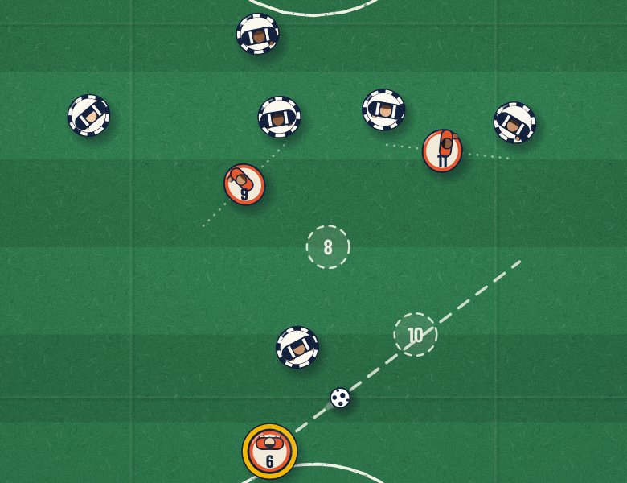

A white deck with black bands next to a white ball with black patches: at a glance in sunlight the defender and the ball are the same object.
When a kit pairs a near-white with a near-black, the renderer draws the deck in the dark colour and the banded rim in silver, with six wide bands instead of fourteen narrow ones. Still clearly "theirs", no longer a patchwork.
Tomato beside claret, plum and brown, the closest pairs in the campaign. The colours converge, but ours keep a solid rim and a squad number and theirs keep the banded rim, so the teams still separate. The banded rim must stay mandatory in every kit.
Change 4. The art direction says every defender must read at a glance on a 360px phone in sunlight. Most of the 45 kits do. A handful do not.